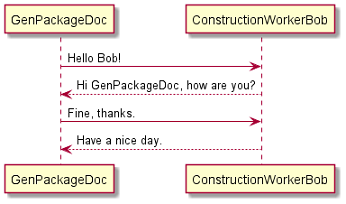
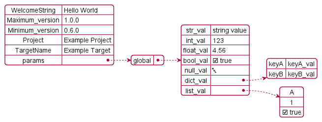

Pictures and Diagrams
How to import pictures?
How to render and import diagrams?Pictures Import
Pictures can be imported in the following way:
Import in reST content:
.. image:: ./pictures/AnyPicture.pngImport in LaTeX content:
\includegraphics[scale=0.7]{./pictures/AnyPicture.png}
The user needs to adapt the scaling to make the rendered diagrams fit to a page of a PDF document in best way. But this scaling only works in LaTeX code, but not in reST code.
Diagrams Rendering and Import
A diagram in this context is a picture that is rendered out of source code. GenPackageDoc supports PlantUML that supports a wide range of diagrams.
To use the PlantUML functionality with GenPackageDoc, some preconditions have to be fulfilled:
PlantUML is installed (either as stand-alone installation or as VSCodium extension)
GenPackageDoc is configured (
packagedoc_config.json):In section
"DIAGRAMS"a path to a diagrams folder is defined (containing the diagrams source code).In section
"JAVA"path and name of the java interpreter is defined (because PlantUML is a java application).In section
"PLANT_UML"path and name of the PlantUML application is defined.
All PlantUML source code files within the "DIAGRAMS" folder need to have the extension puml.
Example: Sequence diagram
The following code of a puml file produces a sequence diagram:
@startuml
GenPackageDoc -> ConstructionWorkerBob: Hello Bob!
ConstructionWorkerBob --> GenPackageDoc: Hi GenPackageDoc, how are you?
GenPackageDoc -> ConstructionWorkerBob: Fine, thanks.
ConstructionWorkerBob --> GenPackageDoc: Have a nice day.
@endumlResult:

Example: JSON diagram
The following code of a puml file produces a sequence diagram:
@startjson
{
"WelcomeString" : "Hello World",
"Maximum_version" : "1.0.0",
"Minimum_version" : "0.6.0",
"Project" : "Example Project",
"TargetName" : "Example Target",
"params" : {
"global" : {
"str_val" : "string value",
"int_val" : 123,
"float_val" : 4.56,
"bool_val" : true,
"null_val" : null,
"dict_val" : {"keyA" : "keyA_val", "keyB" : "keyB_val"},
"list_val" : ["A", 1, true]}
}
}
@endjson
Result:

In case of PlantUML is configured in the GenPackageDoc configuration and in case of puml files are available within the diagrams folder,
GenPackageDoc automatically calls PlantUML to render the diagrams. They can be imported in the following way:
Import in reST content:
.. image:: ./diagrams/SequenceDiagram.pngImport in LaTeX content:
\includegraphics[scale=0.7]{./diagrams/SequenceDiagram.png}